THE BEGINNING OF OUR STORY
병원의 성장은
병원의 성장은
광고만으로 만들어지지 않습니다.
환자가 병원을 발견하고, 의료진을 이해하고, 충분히 신뢰한 뒤 실제 상담과 방문을 선택하기까지 모든 과정이 연결되어야 합니다.
메디힘은 병원 마케팅과 개원 지원에서 시작했습니다. 다양한 현장을 경험하며 브랜드, 콘텐츠, 환자 유치, 상담과 운영 중 어느 하나만으로는 지속 가능한 성장을 만들기 어렵다는 사실을 배웠습니다.
우리가 발견한 하나의 원칙병원의 성장은
환자의 좋은 선택에서 시작된다.
START FROM THE FIELD병원의 문제에서
병원의 문제에서
시작했습니다.
개원을 준비하는 병원에는 브랜드와 공간, 구매와 마케팅이 함께 필요했습니다. 운영 중인 병원에는 신규 환자 유입뿐 아니라 상담, 예약, 재방문을 연결하는 체계가 필요했습니다.
해외 환자를 유치하려는 병원에는 현지 시장에 대한 이해와 콘텐츠, 커뮤니케이션, 환자 경험을 아우르는 운영 역량이 필요했습니다. 병원이 원한 것은 단순한 광고가 아니라 관심이 상담과 방문으로 이어지고, 실제 경험이 다시 브랜드 신뢰와 다음 성장으로 연결되는 구조였습니다.
브랜드콘텐츠상담·예약환자 경험데이터
현장에서 확인한 성장의 문제
메디힘은 병원 마케팅, 개원 지원, 브랜드 컨설팅, 해외 환자 유치와 현지 상담회 운영 등 다양한 현장을 경험하며 병원의 성장을 구성하는 요소를 하나씩 확인해 왔습니다.
좋은 전략이 있어도 실행되지 않으면 성과로 이어지지 않았고, 많은 문의가 발생해도 상담과 예약이 관리되지 않으면 매출로 연결되지 않았습니다. 외부 파트너나 특정 담당자에게만 의존하는 방식은 경험과 역량을 병원과 조직 안에 남기기 어려웠습니다.
LEARNING BY DOING여러 시도는
여러 시도는
하나의 답으로 수렴했습니다.
통합 개원 지원, 병원 브랜드 구축, 해외 마케팅, 현지 상담회, 플랫폼 개발과 병원 운영 지원까지. 메디힘은 무엇이 실제로 작동하는지를 현장에서 검증했습니다.
모든 시도가 같은 결과를 만든 것은 아닙니다. 그러나 각각의 경험은 메디힘이 해야 할 일과 하지 않아야 할 일을 분명하게 만들었습니다.
정보→신뢰→선택→방문→성장
시행착오에서 찾은 해답
단순한 마케팅 대행만으로는 병원의 성장을 끝까지 책임지기 어려웠습니다. 환자를 병원에 소개하는 것만으로는 좋은 의료 경험을 보장할 수 없었고, 플랫폼만으로도 환자와 병원 사이의 복잡한 과정을 모두 해결하기에는 충분하지 않았습니다.
메디힘이 발견한 해답은 플랫폼과 실행, 환자 경험과 병원 운영을 하나의 성장 흐름으로 연결하는 것이었습니다.
03WHERE CHOICE BEGINS이뻐에서
이뻐에서
환자의 선택을 시작합니다.
해외 의료서비스를 선택하는 환자에게 정보의 부족은 단순한 불편이 아니라 불안과 위험으로 이어집니다.
이뻐는 병원을 나열하거나 환자를 소개하는 데 머무르지 않습니다. 환자가 의료진의 생각과 전문성을 이해하고, 병원의 차이를 확인하며, 자신에게 적합한 의료서비스를 주체적으로 선택하도록 돕습니다.
이뻐가 만드는 환자 경험
의료진과 병원에 대한 콘텐츠, 현지 언어 커뮤니케이션, 상담과 예약, 방문 전후의 지원을 하나의 경험으로 연결합니다. 현재 일본 시장에서 시작해 해외 환자의 의료 선택을 더 투명하고 신뢰할 수 있는 과정으로 확장하고 있습니다.
이뻐는 해외 환자의 의료 선택이 시작되는 곳입니다.

OPERATE THE WHOLE JOURNEY선택 이후의 성장까지
선택 이후의 성장까지
직접 운영합니다.
환자의 관심이 상담을 시작하고, 상담이 예약으로 이어지며, 실제 방문과 만족스러운 의료 경험으로 연결되어야 합니다.
그 과정에서 만들어진 데이터와 경험은 다시 병원의 콘텐츠와 운영을 개선하는 자산이 되어야 합니다. 메디힘은 이 전체 여정을 하나의 운영 흐름으로 설계합니다.
메디힘이 연결하는 운영 범위
- 해외 시장과 환자 분석
- 병원과 의료진의 브랜드 전략
- 현지 언어 콘텐츠와 채널 운영
- 이뻐를 통한 환자 접점 형성
- 상담·예약·방문 전환 관리
- 환자 경험과 후속 커뮤니케이션
- 광고·상담·예약·매출 데이터 연결
- 반복 가능한 병원 성장 모델 구축
메디힘이 만드는 것은 일회성 캠페인이나 단기적인 환자 소개가 아닙니다. 병원이 해외 시장을 이해하고 환자와 지속적으로 소통하며, 경험과 데이터를 내부 자산으로 축적할 수 있는 성장 구조를 만듭니다.
ONE CONNECTED PURPOSE환자의 선택과
환자의 선택과
병원의 성장은 연결되어 있습니다.
선택의 확신
신뢰할 수 있는 의료진과 자신에게 적합한 의료서비스를 충분히 이해하고 선택할 수 있도록 돕습니다.
성장의 구조
병원의 전문성과 환자 경험이 단기 광고에 의존하지 않는 브랜드 자산과 성장 기반으로 남도록 합니다.
두 목표가 하나의 흐름이 되는 이유
환자가 충분한 정보를 바탕으로 병원과 의료진을 이해할 때 신뢰가 형성됩니다. 그 신뢰를 바탕으로 한 선택은 더 나은 상담과 의료 경험으로 이어집니다. 좋은 경험이 축적되면 병원은 단기적인 광고에 의존하지 않는 브랜드 자산과 성장 기반을 갖게 됩니다.
메디힘은 환자와 병원을 단순히 연결하는 역할에 머무르지 않습니다. 환자에게는 선택의 확신을 제공하고, 병원에는 그 선택을 지속 가능한 성장으로 전환하는 구조를 제공합니다.
THE MEDIHIM WAY
우리가 일하는 방식
전략을 말하는 것보다 실제로 작동하게 만드는 태도를 중요하게 생각합니다. 다섯 가지 원칙은 메디힘의 판단과 실행을 안내합니다.
01현장에서 시작합니다문제의 답을 현장에서 찾습니다.
병원의 문제를 외부에서 추정하지 않습니다. 의료진, 환자, 상담, 마케팅과 운영 현장에서 실제 문제가 발생하는 지점을 확인합니다.
02실행으로 증명합니다제안에 머무르지 않습니다.
콘텐츠, 상담, 예약, 방문과 후속관리까지 직접 연결하며 실제로 작동하는지를 확인합니다.
03데이터로 판단합니다결과를 연결해 측정합니다.
노출과 문의만을 성과로 보지 않습니다. 상담 전환율, 예약률, 방문률, 환자 획득비용과 매출까지 연결하여 성장의 결과를 측정합니다.
04경험을 시스템으로 남깁니다한 번의 경험을 다음 성장으로.
개인의 감각이나 특정 파트너에게 의존하지 않습니다. 성공과 실패의 경험을 프로세스, 콘텐츠, 데이터와 운영 기준으로 축적합니다.
05환자의 신뢰를 우선합니다좋은 선택의 출발점입니다.
단기적인 전환을 위해 과장된 정보나 불필요한 기대를 만들지 않습니다. 환자가 충분히 이해하고 판단할 수 있는 정보를 제공하는 것이 장기적인 병원 성장의 출발점이라고 믿습니다.
WHO WE ARE
메디힘의 정체성
메디힘은 환자의 더 나은 의료 선택과 병원의 지속 가능한 성장을 연결하는 의료 성장 파트너입니다.
의료산업의 모든 문제를 해결한다고 말하지 않습니다. 직접 경험하고 검증해 온 영역에서 실제로 작동하는 성장 모델을 만들고, 그 모델을 더 많은 병원과 시장으로 확장합니다.선택이 더 나은 의료 경험과
지속 가능한 성장으로 이어지게.
해외 환자와 신뢰할 수 있는 한국의 병원·의료진을 연결하고, 환자의 선택이 더 나은 의료 경험과 병원의 지속 가능한 성장으로 이어지도록 합니다.
신뢰받는 의료 선택·성장
플랫폼으로 확장합니다.
현장에서 검증한 운영 모델을 더 많은 병원과 시장으로 확장해, 환자가 더 나은 선택을 할 수 있는 정보와 경험을 넓힙니다.
브랜드 약속과 핵심 가치
현장성실행성연결성검증성축적성